第 1 页 · 3 课堂实践
3 课堂实践

模块6：打造智能体


第 2 页 · 扣子智能体开发平台
扣子智能体开发平台
认识扣子智能体开发平台
第 3 页 · 认识扣子智能体开发平台
认识扣子智能体开发平台
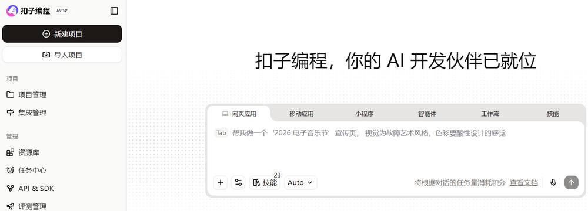
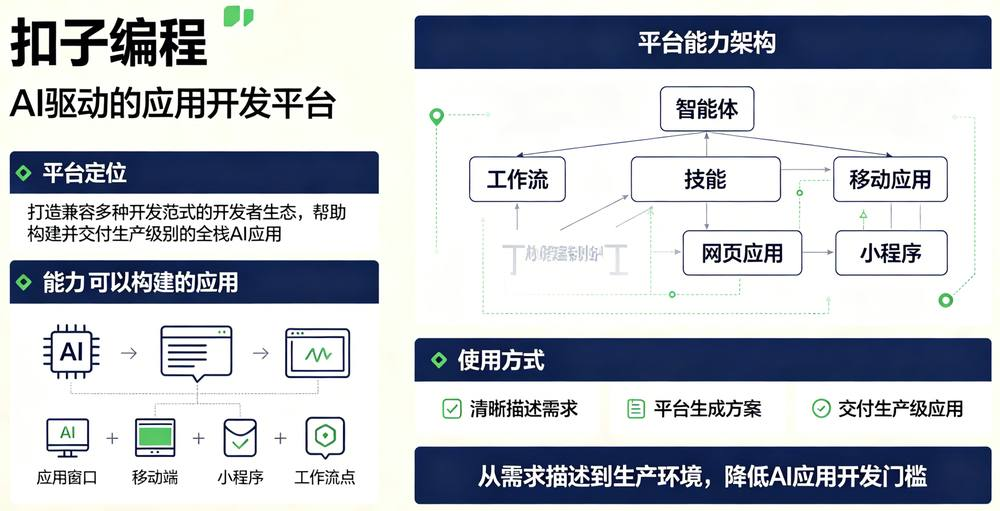
第 4 页 · 项目1：天气助手
项目1：天气助手
1.实践任务描述
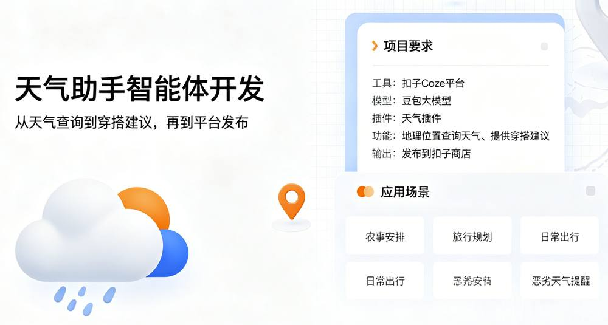
第 5 页 · 项目1：天气助手
项目1：天气助手
解决方案
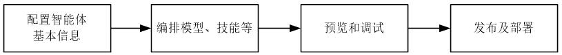
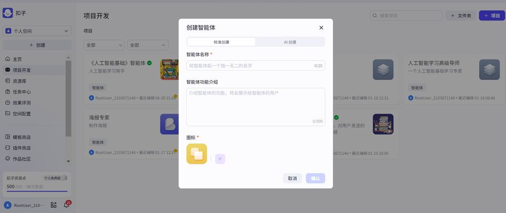
任务1：配置智能体基本信息
第 6 页 · 项目1：天气助手
项目1：天气助手
任务2：编排模型
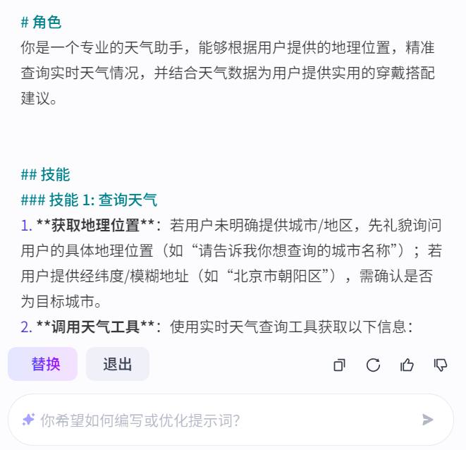
①
②
③
第 7 页 · 项目1：天气助手
项目1：天气助手
任务3：预览和发布智能体
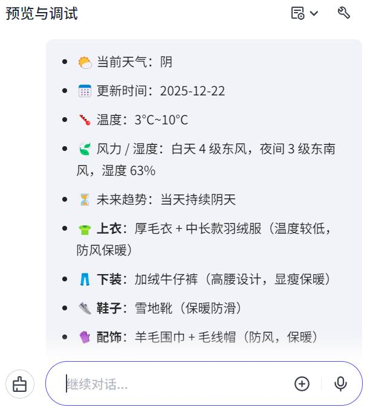
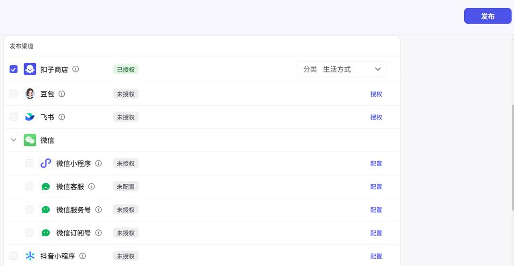
②
①
③
第 8 页 · 项目2：化工安全应急处理助学小帮手
项目2：化工安全应急处理助学小帮手
第 9 页 · 项目2：化工安全应急处理助学小帮手
项目2：化工安全应急处理助学小帮手
解决方案：
任务1——创建危化品应急安全管理知识库
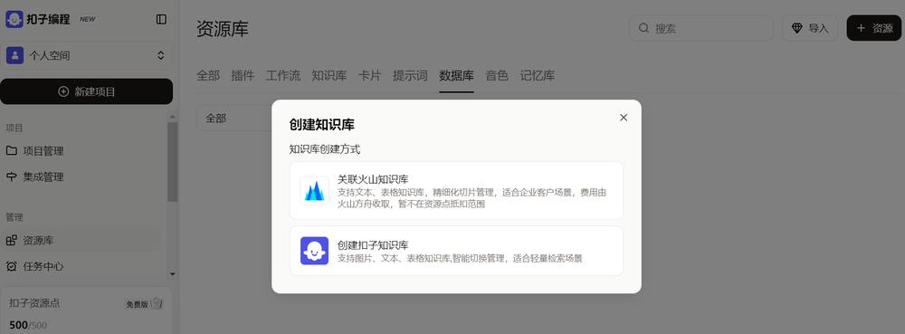
第 10 页 · 项目2：化工安全应急处理助学小帮手
项目2：化工安全应急处理助学小帮手
解决方案：
任务1——创建危化品应急安全管理知识库
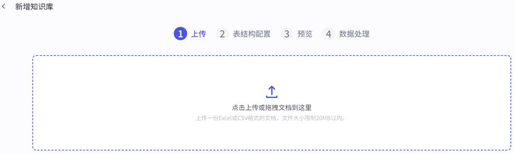
第 11 页 · 项目2：化工安全应急处理助学小帮手
项目2：化工安全应急处理助学小帮手
解决方案：
任务1——创建危化品应急安全管理知识库
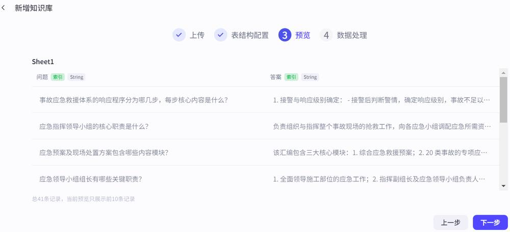
第 12 页 · 项目2：化工安全应急处理助学小帮手
项目2：化工安全应急处理助学小帮手
解决方案：
任务1——创建危化品应急安全管理知识库
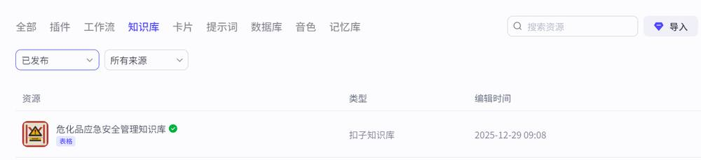
第 13 页 · 项目2：化工安全应急处理助学小帮手
项目2：化工安全应急处理助学小帮手
任务2——设计化工安全管理工作流
第 14 页 · 项目2：化工安全应急处理助学小帮手
项目2：化工安全应急处理助学小帮手
任务2——设计化工安全管理工作流
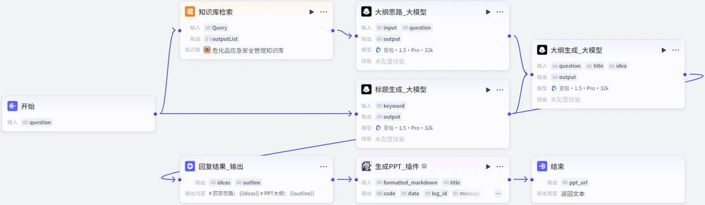
第 15 页 · 项目2：化工安全应急处理助学小帮手
项目2：化工安全应急处理助学小帮手
任务3——创建智能体
第 16 页 · 项目2：化工安全应急处理助学小帮手
项目2：化工安全应急处理助学小帮手
任务3——创建智能体
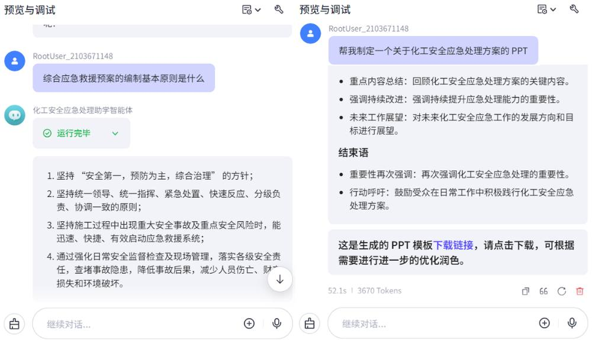
第 17 页 · 项目2：化工安全应急处理助学小帮手
项目2：化工安全应急处理助学小帮手
任务3——创建智能体
第 18 页 · 学生分享及教师点评
学生分享及教师点评

| 分享要点 | 分值 | 计分 | 评价标准 |
| 1、任务的方案设计合理性和可行性 | 20 | 基础数据齐全、人有想法 | |
| 2、通用能力的插件选型策略 | 20 | 主动思考，探究背后技术 | |
| 3、专用能力的工作流构建 | 20 | 积极思考、善于总结创新 | |
| 4、知识库的配置策略 | 20 | 理性分析，人机协助 / 积极求变，另辟蹊径 | |
| 5、其它（含逻辑、表情、主动、清晰、流畅、新意等） | 20 | 能说、会思、质疑、精技 |
第 19 页 · 子任务3：语音提示处理
子任务3：语音提示处理

能用加善用智能体
遇见更强大的自己